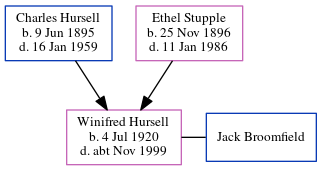

Winifred Elsie Broomfield (née Hursell) 1920 - c1999
[ Home ] | [ Calendar ] | [ Surnames Index ] | [ Census Index ] | [ Family History ]A domestic aid and the older of 2 children of Charles Hursell (a railroad engine-driver) and Ethel Stupple, Winifred Hursell, the third cousin once-removed on the mother's side of Nigel Horne, was born in West Ashford, Kent, England on Jul 4, 19201,2,3. She married Jack Broomfield in Ashford, Kent, England around May 19444. On Sep 29, 1939, she was living at King's Head, Wye, Kent1.
She died c. Nov 1999 in Ashford3.
Parents
- Charles Ernest was born on Jun 9, 1895
- Ethel Mary Alice was born on Nov 25, 1896
Citations
- 1939 Register - Findmypast (was recorded at this address)
- England & Wales births 1837-2006 - Findmypast
- England & Wales deaths 1837-2007 - Findmypast
- England & Wales Marriages 1837-2005 - Findmypast
Media
England & Wales births 1837-2006 - BMD/B/1920/3/AZ/000805/097
England & Wales marriages 1837-2005 - BMD/M/1944/2/AZ/000595/108
England & Wales deaths 1837-2007 - BMD/D/1999/10/82965351
1939 Register Transcription - TNA-R39-1817-1817D-006-30
Family Tree
Generated by ged2site. Last updated on Jun 11, 2024